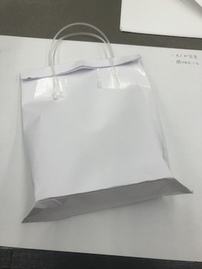

商品概要
袋に入れたまま、カバンに入れると粉々になってしまうスナック菓子を
守ってくれるケースです。
作業進捗
4/11 ペーパーモックアップを作った
Q&A

4/15 中敷の試作
コールドモックアップを作るために、ペーパーモックアップで考えられてなかった
ケース内に入れる予定の中敷きを試作した。
4/16 コールドモックアップを作った
まず、中敷をプラスチック板から切り出し、ケース内に入れる。
試作したときは素材が紙だったので気づかなかったのだが、硬いプラスチックで試作時のままのサイズで中敷をつくり、袋に入れてみると口部分が閉じられないことに気づいた。
4センチほど板をカットし直し、閉じるためにサイドに少しおりグセをつけたことで、袋を閉じられるようにした。
4/17 レビュ
また、途中でアイデアが変わったり、自身の判断で開発を終了する場合もあると思います。
その場合はその旨を記録するようにしてください。